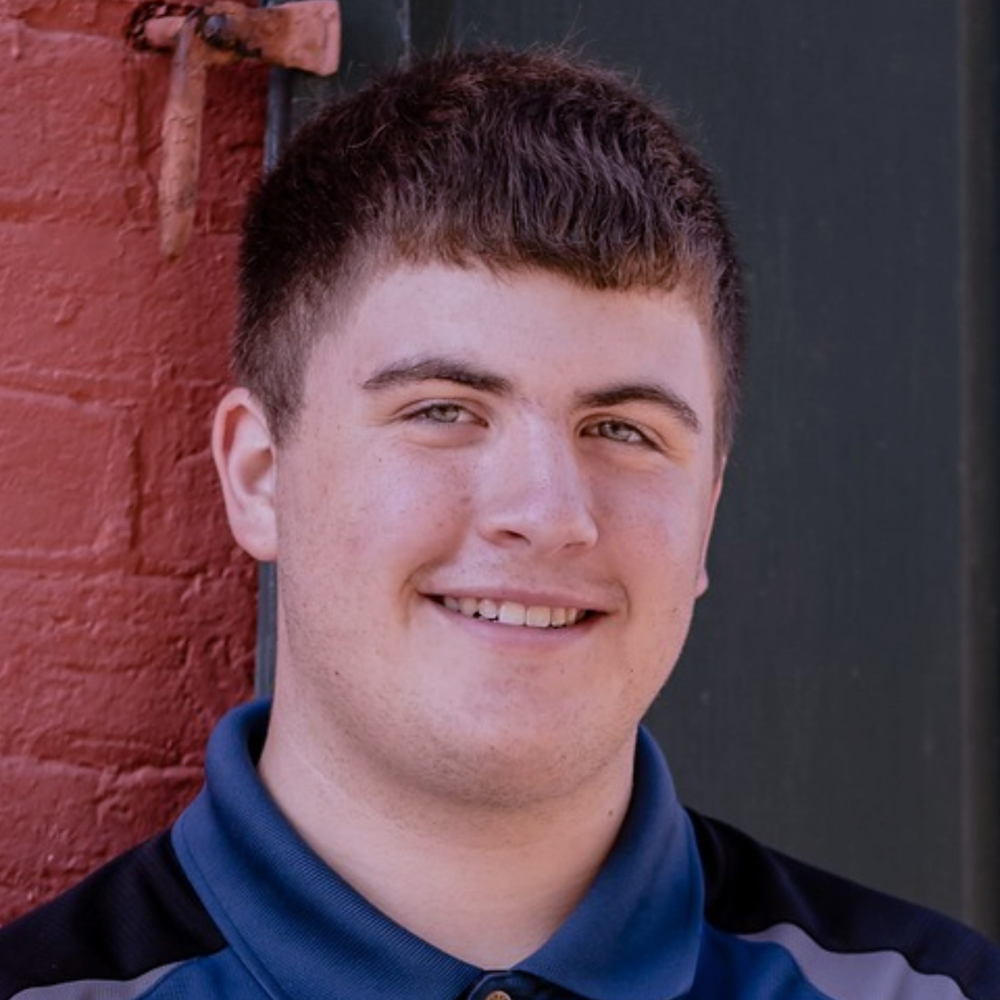

About Me
My name is Paul Nicholas Iten, however, most people know me as Nicholas. I work part-time as an ice cream clerk at United Dairy Farmers and full-time as a student at Mason High School. At UDF I became one of the most trusted and important employees. Just ask one of UDF’s variety of Marks such as Store Manager Mark or Milk Delivery Mark. At MHS my focus has been on computer science; I took the time to learn over five programming languages this summer and hope to continuously add more to my repertoire. Currently I can reasonably utilize VB.NET, C/C++, HTML, CSS, Javascript, React, Python, Rust, and Java. Outside of the traditional classroom setting I participate in German National Honor Society (Ich kann etwas Deutsch sprechen) and Hack Club. You might also find me volunteering for the Down Syndrome Association. I have a brother with down syndrome, so the organization holds a special place in my heart.